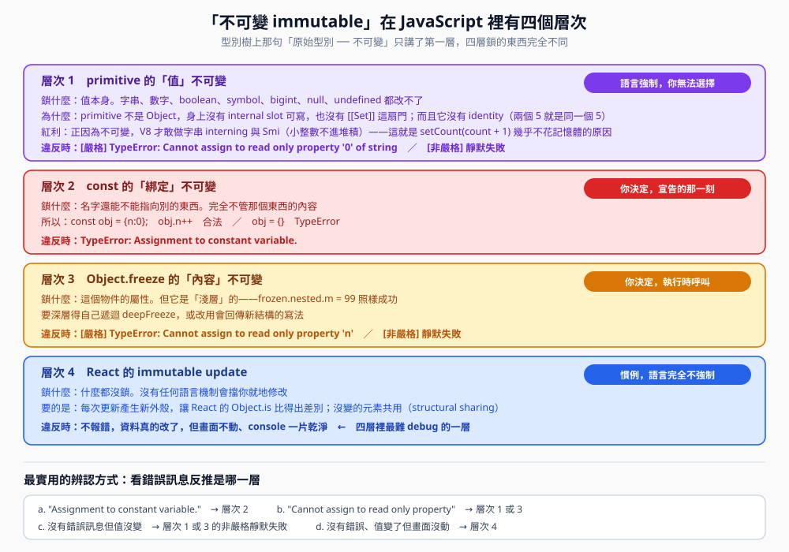

Day 1｜型別辨別、自動轉換的七個入口、immutable 的四個層次
互動版 建立日期 2026-09-07 實測環境 Node v22.23.2 題目來源 explainthis.io 面試題庫
這篇是補充，不是重寫。
「有哪些型別」「truthy／falsy」「== 的 IsLooselyEqual」「包裝物件」已經寫在
JavaScript資料型別總覽 與 追問-BigInt取捨-不可變性-與包裝物件。
這裡只補那兩篇沒展開的三個空缺。
一、有哪些資料型別：三個要修正的講法
規格層叫 language types（語言型別），一共 8 種：7 種 primitive ＋ 1 種 Object。
- Function 不是獨立型別。它是 Object 的子型別，只因為有 [[Call]]
這個 internal method，typeof 才特別回傳 "function"
- Array 也不是獨立型別。它是有 [[ArrayLength]] 這個 internal slot 的 Object
- 規格裡還有一整組你碰不到的型別（specification types）：
Reference Record、Completion Record、
Property Descriptor、Environment Record⋯⋯
← 第一個就是解釋 obj.n++ 為何合法時用到的那個
二、如何辨別型別：五種工具與各自的破口
| 工具 | 分得出什麼 | 破口 |
|---|
| typeof x | 7 種 primitive ＋ function |
typeof null === "object"；陣列／Date／Map／RegExp 全是 "object" |
| Object.prototype.toString.call(x) |
連 null／undefined 都分得出 |
可被 Symbol.toStringTag 竄改，只適合除錯 |
| Array.isArray(x) | 只判陣列，跨 realm 也正確 | 只能判陣列 |
| x instanceof C | 自訂類別的實例 |
跨 realm 失效（iframe、Worker、postMessage） |
| Object.is(a, b) | 判「值有沒有變」 | 不是判型別，是判等值 |
三種等值語意
| 情境 | == | === | Object.is |
|---|
| 0 與 -0 | true | true | false |
| NaN 與 NaN | false | false | true |
| 1 與 "1" | true | false | false |
| null 與 undefined | true | false | false |
React 判斷 state 有沒有變，用的就是 Object.is。
（還沒按過）
跨 realm 那顆按鈕會臨時建一個隱藏 iframe 來製造第二個 realm，測完立刻移除。
三、自動轉換：七個觸發入口
| 入口 | 什麼時候被觸發 | 最常踩的坑 |
|---|
| ToBoolean | if()、while()、!、&&、||、三元 |
只有 8 個 falsy；"0"、[]、{} 全是 truthy |
| ToNumeric | - * / % ** ++ -- |
null + 1 是 1，undefined + 1 是 NaN |
| ToString | + 的字串特例、${}、String()、join |
1 + 2 + "3" 是 "33"，"1" + 2 + 3 是 "123" |
| ToPrimitive | 物件參與上面任何運算前的必經之路 |
Symbol.toPrimitive → valueOf → toString |
| ToPropertyKey | obj[任何東西] |
obj[1] 與 obj["1"] 是同一格 |
| 關係運算 | < > <= >= | 兩邊都是字串才比字典序，否則 ToNumber |
| IsLooselyEqual | == 專屬演算法 | 跟 truthy／falsy 是兩回事 |
（還沒按過）
四、填空練習
五、為何 primitive 是 immutable：四個層次

圖一 四個層次鎖的東西、由誰決定、違反時噴什麼錯完全不同
| 層次 | 鎖什麼 | 由誰決定 | 違反時會怎樣 |
|---|
| 1primitive 值 | 值本身 |
語言，無法選 | 嚴格 TypeError／非嚴格靜默失敗 |
| 2const 綁定 | 名字指向誰 |
你，宣告時 | Assignment to constant variable. |
| 3Object.freeze |
物件的屬性（淺層） | 你，執行時 |
Cannot assign to read only property |
| 4React 更新慣例 | 什麼都沒鎖 |
你，寫 code 時 | 不報錯，畫面不動（最難 debug） |
- 規格層：primitive 身上根本沒有「可以寫」的門。
所有 mutation 的入口都是 Object 的 internal method——[[Set]]、
[[DefineOwnProperty]]、[[Delete]]。
primitive 不是 Object，沒有 internal slot 可寫，也沒有這些 internal method。
不是「被禁止」，是「沒有那扇門」。
- primitive 沒有 identity（身分）。兩個 5 就是同一個 5，語言不區分「哪一個 5」。
既然沒有身分，「改變某一個 5」這句話本身就沒有意義。物件相反，{} !== {}。
- 這是引擎最佳化的前提。正因為不可變，V8 才敢做 string interning（內容相同的字串共用一份）
與 Smi（小整數直接編碼進指標，根本不進堆積）。
這正是「一千萬次 count = count + 1 只動了 0.02 MB」的原因。
- 值語意（value semantics）：a = b 之後兩者互不影響，沒有 aliasing 問題。
- 讓 ===、property key、Map key 的語意穩定：比的是值，不需要問「是不是同一個」。
（還沒按過）
⚠️ 一個很多人不知道的前提
Node 的 .js（CommonJS）預設不是嚴格模式。
只有 .mjs、標了 "type":"module" 的 ESM、
class 內部、以及自己寫 'use strict' 的地方才是。
瀏覽器裡 <script type="module"> 是嚴格，一般 <script> 不是。
這件事決定了「改不可變的東西」會丟錯還是靜默失敗。
- Assignment to constant variable. → 層次 2，你動到了 const 綁定
- Cannot assign to read only property 'x' → 層次 1 或 3
- 沒有錯誤訊息但值沒變 → 層次 1 或 3 的非嚴格靜默失敗
- 沒有錯誤、值變了但畫面沒動 → 層次 4，React 的 Object.is 判定沒變
六、是非題
1. Function 與 Array 是 JavaScript 的獨立資料型別
2. foreignArray instanceof Array 在 iframe 情境會回傳 false，但 Array.isArray 仍正確
3. Object.prototype.toString.call 是最可靠的型別判斷，不會被騙
4. obj[1] 與 obj["1"] 存取的是同一格
5. Object.is 跟 === 在所有情況下結果都一樣
6. immutable 的四個層次中，React 更新慣例那一層違反時完全不會報錯
7. Object.freeze 會把整個巢狀物件都凍起來
8. primitive 不可變的規格層原因是它沒有可供寫入的 internal method
七、申論題
題目一 同事說「用 Object.prototype.toString.call 判型別最保險」。請說明這句話對在哪、錯在哪，以及你會怎麼組一個判斷函式。
- 對的部分 它比 typeof 分得細，連 null／undefined／Date／Map／RegExp 都分得出來，而且不受 realm 影響
- 錯的部分 它讀的是可寫的 Symbol.toStringTag，任何物件都能偽裝成 [object Array]，所以只適合除錯不適合當安全判斷
- 而且它慢 每次都要建字串再切片，熱路徑上不划算
- 我會這樣組 先擋 null（因為 typeof null 是 "object"）→ 非物件直接用 typeof（最快）→
陣列用 Array.isArray（跨 realm 正確）→ 剩下的才用 toString tag 切細
- 再往上一層 真正的解法是在邊界做 runtime validation（zod 或 type guard），
而不是在業務邏輯裡到處判型別
題目二 請用「鎖什麼、由誰決定、違反時怎樣」三個維度，說明 const、
Object.freeze、primitive 不可變、React 更新慣例四者的差別，
並各舉一個會被混淆的實例。
- primitive 值 鎖值本身／語言強制無法選／嚴格 TypeError、非嚴格靜默失敗。
混淆實例：s.toUpperCase() 以為改了字串，其實是造了新字串
- const 綁定 鎖名字指向誰／你宣告時決定／Assignment to constant variable。
混淆實例：const arr = []; arr.push(1) 合法，很多人以為 const 陣列不能加東西
- Object.freeze 鎖物件屬性且是淺層／你執行時呼叫／Cannot assign to read only property。
混淆實例：以為 freeze 之後整棵樹都安全，結果內層照樣被改
- React 更新慣例 什麼都沒鎖／你寫 code 時決定／完全不報錯。
混淆實例：todos[0].done = true; setTodos(todos)，資料改了畫面不動
- 一句話串起來 前三層是語言在管，第四層只有你在管，所以第四層才需要靠 code review、
ESLint 規則、或 Immer 這類函式庫來守
八、遇到實際 bug 時的分析手段
面試時他們想看的是這一段，不是背誦定義。先確認型別，再懷疑邏輯——順序很重要，因為型別錯的 bug 看起來都像邏輯錯。
- 用 console.log({ x }) 而不是 console.log(x)
包成物件印，Console 會保留引號：{x: "5"} 一眼看出是字串
- Console 直接敲 Object.prototype.toString.call(x) 一行定位
- Sources 分頁下 conditional breakpoint 條件寫 typeof x !== 'number'，
只在型別跑掉那一刻停下來
- Network 分頁看 API 原始 JSON 確認後端回的是 "123" 還是 123。很多事故的源頭在這裡
- NaN 汙染往上游追 NaN 會沿著算式一路傳染，用 Number.isNaN 插檢查找第一個變 NaN 的地方
- 懷疑跨 realm 時比對 Array.isArray(x) true 但
x instanceof Array false，就確定跨了 realm
- 邊界做 runtime validation API 回應、表單輸入、localStorage 這三個地方的型別完全不受你控制
面試時可以這樣講：先說觀察到的現象，再說你怎麼縮小範圍（第 3、4 點），最後才說結論。過程比答案值錢。
九、延伸練習
十、參考來源